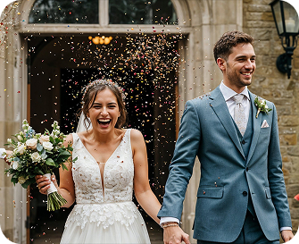

<section class="section is-about" id="about">
  <div class="container is-about">
    <svg
      class="sec-decoration is-about"
      width="299"
      height="20"
      aria-hidden="true"
      focusable="false"
    >
      <use href="./images/sprite.svg#icon-decoration"></use>
    </svg>
    <h2 class="heading-medium about-heading">
      Meet Maria Kovalenko: Your Partner in Capturing Unforgettable Wedding
      Moments
    </h2>
    <p class="about-text">
      With years of experience in wedding photography, Maria specializes in
      capturing genuine emotions and beautiful moments. Her unique approach
      blends artistry with a personal touch, ensuring that each couple's story
      is told through stunning imagery.
    </p>

    <picture class="about-picture">
      <!-- Desktop: 1440px + -->
      <source
        media="(min-width: 1440px)"
        srcset="
          ../images/about-img/about-dec-img.webp    1x,
          ../images/about-img/about-dec-img@2x.webp 2x
        "
      />

      <!-- Tablet: 768px  -->
      <source
        media="(min-width: 768px)"
        srcset="
          ../images/about-img/about-tabl-img.webp    1x,
          ../images/about-img/about-tabl-img@2x.webp 2x
        "
      />

      <!-- Fallback + Mobile -->
      
    </picture>
  </div>
</section>
